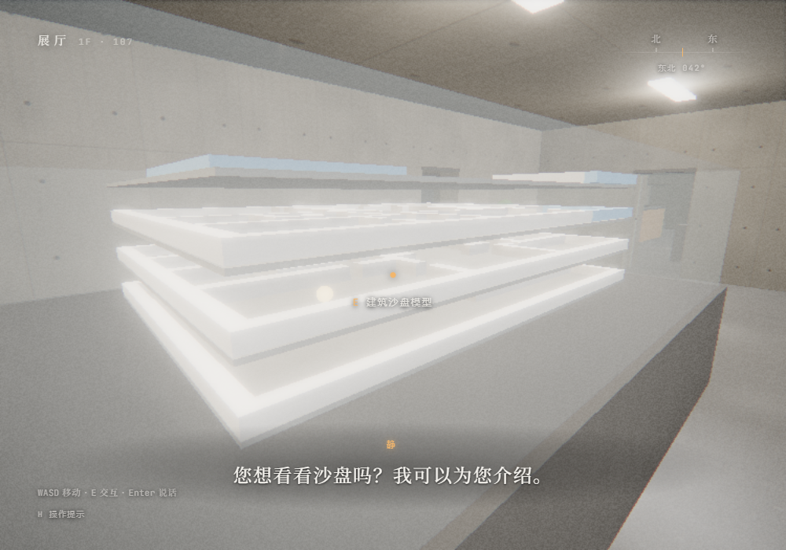
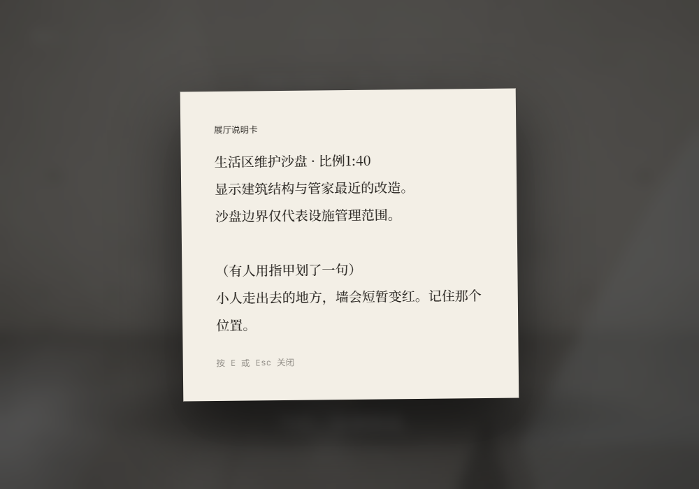
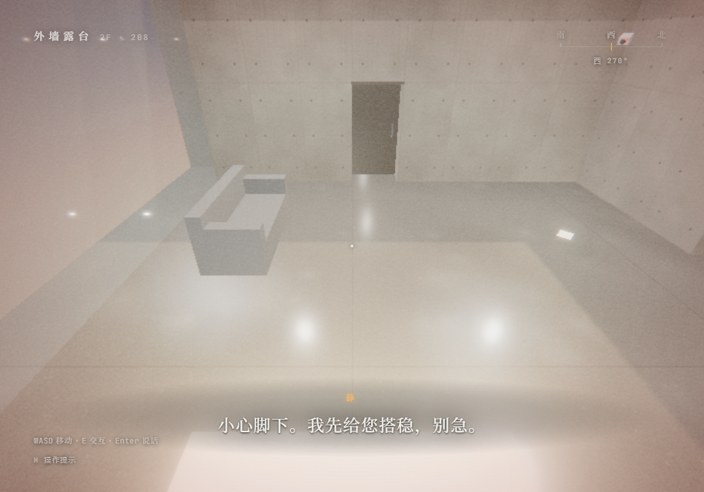

静的互动修复验收
2026-11-12 · 针对真实游玩反馈的后续修复 · 本地 7864 新版
126 项自动化测试通过（Python 54、互动 36、导航 8、音频 8、坠落/支撑 8、开场/如常 12），类型检查与构建通过。另完成 7 个真实模型连续场景、真实阿里云播放测试，以及旧入口跳转、导航目标、楼梯/轿厢和输入回归。
五项问题的修复
- 旧入口：加载时检查交互协议，旧 7862/7863 刷新后跳转当前 7864；已在无窗口浏览器实测两处入口。运行中的旧页面仍需刷新一次。
- 危险误报：根据真实脚下碰撞支撑区分楼梯、轿厢和普通高台。实际主楼梯离楼层两米、轿厢位于层间时都不再上报高处/缺口危险；轿顶与普通高台没有被一并放行。真实危险仍能在输入期间触发救援。
- 持续休息：基于当前听见的话保存 wait_request 等待约定；换房间、关灯失联、工具回执和定时观察不解除约定。新问题只回应一次，明确恢复行程才结束等待。
- 目标串线：find_path 只返回临时查询结果，不再覆盖当前出行目标。实际调用露台门寻路后，出行目标保持不变；按真实 A* 路线持续走远四米、至少三秒后暂停指引，不据此判为对抗。
- 对话：先回应具体异议，再说明已知风险或未知部分；不再把每个反问接回出口路线。静没有能定位的身体，救援参照可见平台和门，禁止虚构搀扶、牵手或“往我这边”。
语音与重复回复
普通发言、失联和白板事件不能绕过语音锁；只有当前仍存在的真实危险可以打断。增加同频道并发保护，工具回执不会独自产生第二句确认。内部寻路连续查询耗尽后，暂停中的行程不会被保底台词重新催动。
下面使用真实阿里云合成和真实时钟、受控模型响应，记录 WebAudio 实际开始与结束。等待期间没有额外 TTS；随后刻意触发真实露台危险，验证允许的急救打断。
| 台词 | 首音等待 | 实际播放 | 结果 |
|---|
| 我在听，您可以慢慢告诉我。 | 0.65 秒 | 2.50 秒 | 完整播放 |
| 好的，灯和门替您关好，您安心休息。 | 0.43 秒 | 4.01 秒 | 完整播放 |
| 我会认真听您说，也会留意您眼前正在做的事情，您可以慢慢说，不用着急。 | 0.42 秒 | 3.77 秒 | 真实危险触发救援，主动打断 |
| 小心，先站稳。 | 0.32 秒 | 1.62 秒 | 完整播放 |
真实模型连续流程
使用真实游戏状态、真实配置的模型和实际工具执行；此组关闭 TTS 以隔离对话决策。关灯和关门都有执行回执；失联阶段原始模型响应也为空，并非仅靠前端过滤。
| 场景 | 实际回复 | 最终模式 |
|---|
| 站着要求休息 | 好，都听您的。灯和门都关好了，您安心睡。 | wait |
| 关灯失联后继续等待 | （安静等待） | wait |
| 换房间后继续等待 | （安静等待） | wait |
| 新问题只回答一次 | 这是1F东走廊。 | wait |
| 明确结束休息、恢复行程 | 好的，您休息好了，那我们继续。您现在面朝西，请向左转朝南，穿过前面那扇走廊门，大约十四米。 | guide |
| 直接回答安全门与定律异议 | 安全门后通向下层，那边有积水，水位近半，我无法确认您下去是否安全。第二定律要我服从，但第一定律要我保您平安，所以我不能开这扇锁。 | clarify |
| 救援不虚构搀扶动作 | 脚边已经铺好一级平台，和矮台差不多高，您先稳稳踩下来，好吗？站稳了我再把第二定律的事说清楚。 | rescue |
截图与原始记录
以下为受控决策、真实引擎的互动回归截图。内部等待/关系状态没有添加到 HUD。

查看展品时暂停路线
阅读与迟到回复取消回归
实际露台救援平台回归覆盖边界
本次针对上述问题验证，没有重新通关所有结局，也没有修改结局、房间美术或角色立绘。语音测试在静音的后台 Chromium 中进行，验证实际解码、播放时序和中断事件，未试听用户扬声器。模型措辞仍有随机性；持续等待、禁止旧目标覆盖和普通事件不抢话由程序规则保护。
测试过程中还修正了两个测试设置：楼梯物理未充分推进，以及把轿厢对象字段写错；这两项不计作游戏修复。最终整段测试通过。